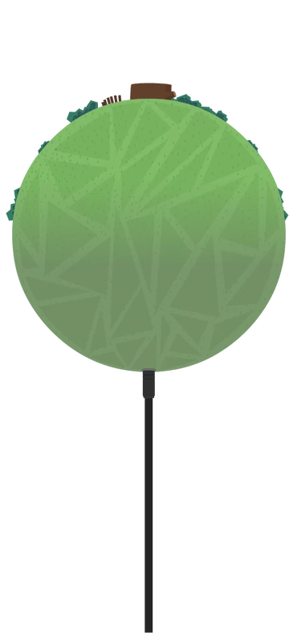
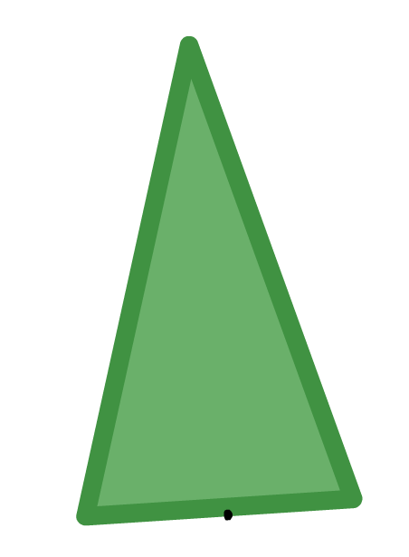
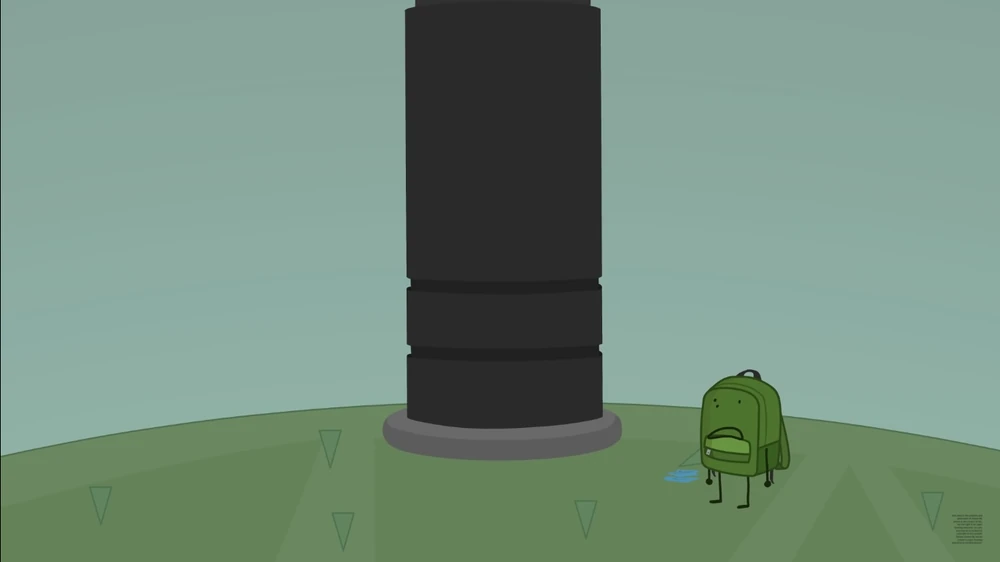
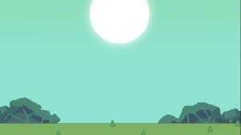

This is The Plane, a private planet disconnected from all other universes.

The Plane has some really interesting and fun features! One of the features that everyone finds interesting and cool is the fact that the grass always points towards the sun, no matter where you are on the Plane!

Another fun element of the Plane is its cool attractions! It has a lovely, hand-built shack with a chess board for entertainment! There's also a big pool for you to take a dip in! But the best attraction is this planet's very own world wonder:
The Plug
Just look at how thrilling it looks! No one knows how it got there or what the plug is connected to! So much mystery and curiosity! Maybe one day someone will figure out the secret of the plug!
Below are some photos of the Plane!


Links for More Info:
Wiki PageAll of the following belong to Cheesy Hfj and his lovely show, ONE! I take no credit for any of their work and recommend you go watch ONE.